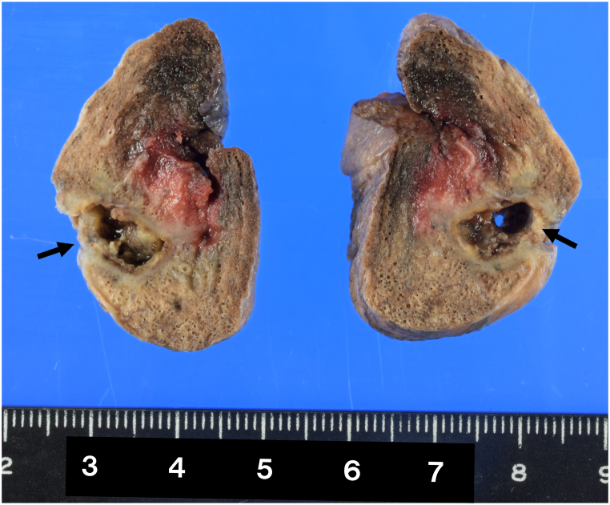
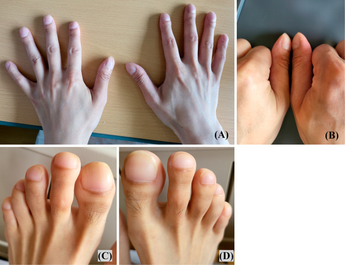
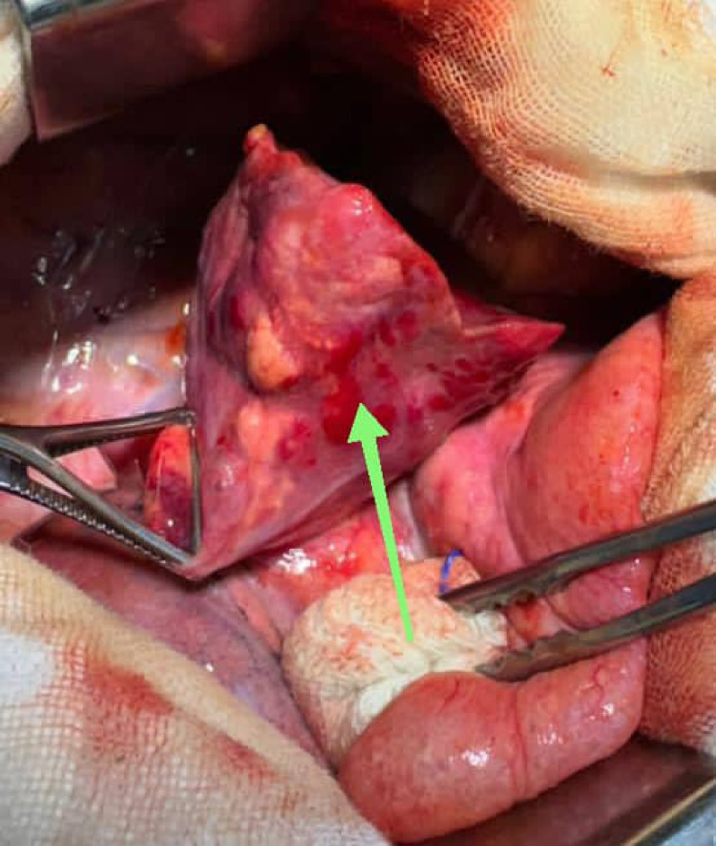

Абсцесс и гангрена лёгкого. Бронхоэктатическая болезнь
Абсцесс лёгкого: определение и патоморфологическая основа
Когда бактерии попадают в лёгочную ткань, та отвечает воспалительным инфильтратом — скоплением воспалительных клеток и жидкости в лёгочной паренхиме, то есть очагом уплотнения, в котором альвеолы заполнены экссудатом. В центре такого инфильтрата ткань постепенно разрушается: расплавляется и гибнет. Этот процесс называют деструкцией. Абсцесс лёгкого — это гнойная полость, которая образуется в центре инфильтрата в ходе деструкции и со всех сторон отграничена пиогенной капсулой.[Кузин, с. 137]

На томограмме эта полость выглядит так: округлая зона просветления с чётким горизонтальным уровнем — снизу жидкий гной, сверху воздух, а вокруг — сохраняющийся инфильтрат затемнения.[Кузин, с. 171]
На кадре хорошо видна полость с горизонтальным уровнем жидкости: нижняя половина плотная — это гной, верхняя прозрачная — это воздух. По периферии полости заметна зона неоднородного затемнения. Это перифокальное воспаление, то есть воспалительная реакция лёгочной ткани, окружающей абсцесс. Именно эта зона инфильтрата и служит морфологической основой пиогенной капсулы.
Пиогенная капсула — не просто стенка полости. Это слой грануляционной и фиброзной ткани, который организм выстраивает вокруг гнойного очага, чтобы отделить его от остального лёгкого. Она удерживает воспаление в пределах одного участка — и тем самым становится главным маркером отграничения процесса. Представьте, что было бы без неё: инфекция распространялась бы без каких-либо границ, захватывая долю за долей. Сам факт формирования капсулы означает, что защитные реакции организма справляются, а иммунная система сдерживает инфекцию в пределах очага.
Именно поэтому абсцесс занимает отдельное место в классификации инфекционных деструкций лёгкого. Деструкции делят на два полюса: отграниченные и неотграниченные. Абсцесс — первый полюс, он отграничен капсулой. Гангрена лёгкого — второй: некроз там расползается без границ, пиогенная капсула не успевает сформироваться, а это признак того, что защитная реакция подавлена. Между этими двумя формами — не просто разная степень тяжести, а принципиально разный патоморфологический механизм.
Два признака абсцесса, таким образом, неразрывны: деструкция лёгочной ткани в центре и перифокальный инфильтрат по периферии. Нет капсулы — нет абсцесса: гнойная полость без отграничения — это уже другая болезнь.[Кузин, с. 137]
Гангрена лёгкого: определение и отличие от абсцесса
Абсцесс лёгкого — это полость, отграниченная пиогенной капсулой. Организм успевает выстроить стену вокруг очага, и дальше некроз не идёт. Гангрена лёгкого — принципиально иное состояние: это прогрессирующий некроз, то есть омертвение ткани, которое не останавливается и не имеет чётких границ. Никакой капсулы нет, и разрушение распространяется на соседние участки паренхимы.
Отсутствие капсулы объясняется состоянием иммунного ответа. При абсцессе организм сохраняет достаточный контроль над воспалением: перифокальное воспаление постепенно сгущается, фибробласты откладывают коллаген, и пиогенная капсула замыкается вокруг гнойника. При гангрене иммунный ответ подавлен или опережён инфекцией настолько, что этот процесс попросту не успевает запуститься. Отсутствие отграничения — то есть изоляции очага от окружающей здоровой ткани — и есть патологоанатомический признак, по которому гангрена отличается от абсцесса. Изоляция абсцесса свидетельствует о выраженной защитной реакции организма, тогда как отсутствие отграничения при распространённой гангрене является результатом прогрессирующего некроза.[Кузин, с. 137]
На препарате видны множественные тромбоэмболы в сегментарных и субсегментарных артериях. Именно сосудистый тромбоз делает некроз необратимым: кровоснабжение участка прерывается, и лейкоциты — главные строители будущей капсулы — просто не поступают в зону поражения. При абсцессе кровоток вокруг полости сохранён, перифокальный инфильтрат со временем превращается в капсулу — и это принципиально другая ситуация.
На КТ при гангрене обнаруживаются обширные участки паренхимы, не накапливающие контраст, — признак полной ишемии и некроза без каких-либо ровных границ.
На шестые сутки от начала заболевания зоны некроза занимают значительную часть доли. Контуры размыты, чёткой стенки нет — именно так выглядит отсутствие отграничения на практике. При двустороннем поражении картина ещё более угрожающая.
КТ-ангиография лёгочных артерий показывает двусторонние базальные затемнения и симптом «матового стекла» с нарушением контрастирования сосудистого русла. Это прямое подтверждение сосудистого механизма гангрены: тромбоз артерий лишает паренхиму и питания, и иммунных клеток одновременно.
| Критерий | Абсцесс лёгкого | Гангрена лёгкого |
|---|---|---|
| Отграничение | Есть: очаг изолирован от здоровой ткани | Отсутствует: некроз распространяется без границ |
| Пиогенная капсула | Формируется по периферии полости | Не формируется |
| Иммунный ответ | Выражен: организм ограничивает очаг | Недостаточен или подавлен |
| Прогноз при лечении | Летальность до 5 % при неосложнённом течении, свыше 40 % при осложнениях | Без операции — практически безнадёжен; при отграничении возможен переход в хроническую форму |
Разница между двумя состояниями сводится к одному: есть ли граница. При абсцессе она есть — пиогенная капсула замыкает полость, и иммунный ответ держит инфекцию в узде. При гангрене границы нет вовсе: иммунный контроль утрачен, некроз расползается по паренхиме, а капсула не успевает сформироваться, потому что тромбоз сосудов отрезает лейкоциты от зоны поражения. Прогностически это принципиально: летальность при неосложнённом абсцессе не превышает 5 %, тогда как при осложнённом — свыше 40 %. При гангрене, если отграничение не происходит, единственным способом спасти жизнь остаётся срочная операция.
Исход гангрены не всегда катастрофический немедленно. Если защитные силы организма частично восстанавливаются — на фоне антибиотиков, интенсивной терапии, улучшения кровотока — вокруг некротических масс начинает формироваться воспалительный вал. Отграничение остаётся неполным, но оно есть. Клиническая картина в таком случае становится похожей на таковую при абсцессе и нередко переходит в хроническую форму. Это единственный вариант, при котором гангрена эволюционирует в более управляемое состояние без операции. Во всех остальных — прогрессирование некроза без хирургии означает гибель больного.[Кузин, с. 141]
Этиопатогенез абсцесса лёгкого: пути инфицирования
Некроз лёгочной ткани — это итог, а не начало болезни. Чтобы он возник, инфекция должна сначала попасть в лёгкое одним из трёх путей: через бронх, через кровь или через лимфатический сосуд. От того, каким путём пришёл возбудитель, зависит, где именно возникнет очаг и будет ли он одиночным.
Аспирационный путь — это проникновение заражённого материала в бронхиальное дерево при вдохе. Он встречается чаще всего, и реализуется в строго определённых условиях. Нужно, чтобы защитные рефлексы были подавлены: так происходит при алкогольном опьянении, наркозе, эпилептическом припадке, глубоком обмороке.
В таком состоянии содержимое рта и глотки — слюна, частицы пищи, отделяемое из очагов хронической инфекции вроде кариозных зубов или гнойных тонзиллитов — беспрепятственно затекает в бронхи. Аспирированный материал оседает в участке лёгкого, перекрывает мелкий бронх, и дистальнее него формируется инфильтрат.
Решающую роль здесь играет анаэробная флора полости рта — бактероиды, фузобактерии, пептострептококки. В условиях закупоренного бронха кислород быстро расходуется, и именно анаэробы получают среду, в которой размножаются без конкурентов. Они выделяют ферменты, разжижающие ткань, и именно их активность во многом определяет скорость гнойного расплавления с образованием полости, то есть собственно абсцесса.
Гематогенно-эмболический путь — это занос возбудителя в лёгкое с током крови. Инфицированный тромб или септический эмбол из отдалённого очага — остеомиелита, эндокардита, тромбофлебита — попадает в ветвь лёгочной артерии и закупоривает её. Сосуды в зоне окклюзии тромбируются, кровоснабжение прекращается, и участок лёгкого подвергается некрозу: развивается инфаркт лёгкого.
В некротизированной ткани бактерии, принесённые тем же эмболом, находят питательную среду и запускают гнойное расплавление. Происходит так потому, что мёртвая ткань не обороняется: нейтрофилы туда не приходят, местный иммунитет не работает. Абсцессы, возникшие этим путём, почти всегда множественные — один эмбол редко оказывается последним, — и располагаются преимущественно в нижних долях лёгкого, куда попадает большая часть венозного кровотока.
Лимфогенный путь — занос инфекции с током лимфы — встречается редко. Он возможен при тяжёлых гнойных процессах по соседству: ангине с регионарным лимфаденитом, медиастините, поддиафрагмальном абсцессе. Лимфатические сосуды в норме служат барьером, а не магистралью для бактерий. Прорыв инфекции этим путём происходит лишь тогда, когда местные фильтры — лимфатические узлы — уже подавлены и несостоятельны.[Кузин, с. 137]
Особого внимания заслуживает стафилококковая деструкция — форма лёгочного нагноения, при которой возбудителем служит Staphylococcus aureus, а патологический процесс разворачивается по собственному сценарию. Стафилококк выделяет лейкоцидин и коагулазу — вещества, которые разрушают лёгочную ткань стремительно и на большом протяжении. Очаги деструкции возникают множественными одновременно, нередко сразу в обоих лёгких.
Характерная черта этой формы — образование булл, то есть тонкостенных воздушных полостей. Они возникают при разрыве мелких бронхиол и задержке воздуха в некротизированном участке. Буллы особенно часты у детей: их лёгочная ткань более рыхлая, и давление при кашле легко разрывает изменённые бронхиолы. Стафилококковая деструкция отличается от обычного абсцесса именно этим сочетанием — множественность очагов плюс воздушные полости без выраженной пиогенной капсулы.
Путь инфицирования определяет всё остальное: локализацию, число очагов и состав флоры. Аспирация даёт, как правило, одиночный абсцесс в задних сегментах верхней или нижней доли с анаэробной флорой. Гематогенный занос — множественные очаги в нижних долях, нередко двусторонние. Лимфогенный путь не имеет характерной локализации, зато всегда указывает на тяжёлый первичный очаг. Стафилококковая деструкция узнаётся по множественным буллам и молниеносному течению.
Клиническая картина острого абсцесса лёгкого: два периода
Острый абсцесс лёгкого разворачивается в два чётко разграниченных периода. Граница между ними — не постепенная, а событийная: это момент, когда гной прорывается в просвет бронха и получает выход наружу. До этого момента — один тип страдания, после — принципиально другой.
Первый период длится от начала болезни до прорыва. Расплавление лёгочной ткани уже идёт, пиогенная капсула только формируется, гной закрыт в полости и никуда не выходит. Именно поэтому всё, что происходит с больным в этот период, определяется не потерей мокроты, а всасыванием продуктов распада — то есть картиной тяжёлой интоксикации. Температура высокая, нередко с ознобами и потами, характерными для гектического типа. Нарастает слабость, тахикардия, снижение аппетита. На рентгенограмме виден участок затемнения, округлый инфильтрат — без полости и без горизонтального уровня жидкости. Полость в этот период ещё не видна, потому что гной не сообщается с воздухом: нечему давать уровень.
Переход во второй период — это прорыв в бронх (ruptio in bronchum). Стенка одного из бронхов, прилежащего к гнойной полости, расплавляется под действием протеолитических ферментов, и гной получает сообщение с воздухоносными путями. Этот момент больной замечает сам: внезапно начинается кашель и отходит большое количество зловонной мокроты — полным ртом, как говорят в клинике. Для пациента это оглушительно и отвратительно. Для врача — признак, который сразу меняет весь прогноз.
Второй период начинается с этого кашля. Мокрота при абсцессе лёгкого имеет характерное свойство: если собрать её в прозрачный сосуд и дать постоять, она разделяется на три слоя — верхний пенистый, средний серозный и нижний густой гнойный осадок. Это трёхслойность мокроты, и она настолько характерна, что раньше служила одним из диагностических признаков. На рентгенограмме теперь видна полость с горизонтальным уровнем «жидкость — воздух»: гной внизу, газ сверху.
После прорыва состояние больного, как правило, улучшается: температура снижается, интоксикация ослабевает. Дренаж работает.
Но улучшение наступает не всегда — и здесь решающую роль играет анатомия. Представьте полость, которая уже есть, однако сообщается с бронхом через мелкий извилистый ход, расположенный в верхней части полости. Гной должен вытекать снизу вверх — против гравитации. Опорожнение в таком случае идёт медленно, полость не очищается, и продукты распада продолжают всасываться. Гной, постоянно попадая в мелкие бронхи, раздражает их слизистую и вызывает гнойный бронхит — вторичное воспаление бронхиального дерева с обильным образованием мокроты. Состояние такого больного остаётся тяжёлым, хотя формально уже наступил «второй период».[Кузин, с. 139]
Когда дренирование через извилистый бронх затягивается, суточное количество мокроты может достигать 500 мл и более, интоксикация не спадает, а организм быстро истощается. Острый абсцесс в таких случаях переходит в хроническую форму или даёт осложнения, и хирург вынужден создать дополнительный дренаж — уже не бронхиальный, а наружный.[Кузин, с. 145]
При затяжном течении второго периода — особенно когда дренирование через извилистый бронх неполноценно и интоксикация сохраняется неделями — развивается один из характерных признаков хронической гнойной болезни лёгких. Концевые фаланги пальцев утолщаются в виде барабанных палочек, а ногтевые пластины приобретают вид часовых стёкол. На снимке деформация затрагивает все пальцы кистей и стоп; угол между ногтевым ложем и кожей первого пальца сглажен или превышает норму. Этот признак говорит о длительной тканевой гипоксии и хроническом нагноении, а не о разовом эпизоде.
Главное, что следует запомнить из этого раздела: судьба абсцесса в остром периоде определяется качеством дренирования через бронх. Широкое сообщение — быстрое опорожнение, улучшение, шанс на выздоровление. Узкий извилистый ход — медленное опорожнение, гнойный бронхит, затяжное течение и высокий риск хронизации.[Кузин, с. 139]
Рентгенологическая и лабораторная диагностика абсцесса лёгкого
Рентгенография грудной клетки — первый и обязательный шаг, когда есть подозрение на абсцесс лёгкого. До того как гной прорывается в бронх, на снимке виден плотный инфильтрат без чётких границ. Выглядит это как тяжёлая пневмония — и на этом этапе отличить одно от другого по снимку действительно невозможно.
Всё меняется после дренирования. Полость сообщается с бронхом, воздух входит сверху, гной остаётся снизу — и между ними возникает горизонтальная граница раздела. Это и есть уровень жидкости: прямая линия, которую рентгеновский луч пересекает строго горизонтально. Она видна только потому, что над жидкостью стоит воздух, а не ткань. Именно по этому признаку на снимке распознают полость абсцесса.
Теперь — о контурах этой полости. Снаружи пиогенная капсула окружена зоной перифокального воспаления, и оно размывает её края. Воспалённая паренхима и капсула сливаются в единое серое пятно — вот почему в самом начале дренирования внешняя часть капсулы имеет нечёткие контуры: граница между стенкой абсцесса и окружающей тканью на снимке просто неразличима.
Но по мере того как гной эвакуируется, а перифокальное воспаление стихает, края пиогенной капсулы постепенно уплотняются. На снимке полость начинает отграничиваться от здоровой ткани ровным кольцом — контуры становятся чёткими. Эта динамика — от размытых контуров к чётким — сама по себе служит признаком того, что дренирование идёт в нужном направлении.
Бывает, что абсцесс расположен нестандартно: за куполом диафрагмы, в прикорневой зоне или за тенью сердца. Обычная рентгенограмма тогда не даёт достаточной информации — такие зоны перекрыты другими структурами, и плоский снимок их просто не покажет. В подобных случаях переходят к компьютерной томографии: она уточняет форму, размер и точное положение полости, а заодно выявляет дополнительные очаги деструкции, которые на рентгенограмме остались бы невидимыми.
Лабораторная картина отражает тяжесть гнойного процесса — и она вполне закономерна. В общем анализе крови обнаруживают нейтрофильный лейкоцитоз со сдвигом формулы влево и увеличение СОЭ. В биохимическом анализе снижается уровень общего белка и альбумина: организм расходует белок на воспалительную реакцию и теряет его с мокротой. Анализ мокроты подтверждает гнойный характер процесса и, что особенно важно, позволяет выделить возбудителя — а значит, подобрать антибактериальную терапию прицельно, а не вслепую.
Итог: диагноз абсцесса лёгкого устанавливают рентгенологически — по полости с уровнем жидкости. А динамика чёткости контуров отражает то, насколько эффективно идёт дренирование.
Клиническая картина и течение гангрены лёгкого
При абсцессе пиогенная капсула удерживает инфекцию внутри полости — это и есть тот самый барьер, который не даёт некрозу расти дальше. При гангрене такого барьера нет вовсе. Некроз расползается без границ: перифокальное воспаление не успевает превратиться в плотный вал, иммунная система постепенно теряет контроль над процессом. Именно поэтому тяжесть гангрены принципиально иная, чем при абсцессе, — и дело здесь не в размере поражения, а в том, что отграничения просто нет.
Раз нет отграничения — нет и барьера. Инфекция получает открытый путь за пределы лёгкого. Микроорганизмы и продукты распада тканей поступают в кровь, и развивается сепсис — системная воспалительная реакция на инфекционный очаг, при которой страдают органы, далёкие от самого очага. Если органная дисфункция охватывает сразу несколько систем, наступает полиорганная недостаточность: одновременный срыв работы двух и более жизненно важных органов — лёгких, почек, печени, сердца. Крайняя точка этой цепи — септический шок, состояние, при котором артериальное давление падает настолько, что его уже не удаётся поднять восполнением объёма жидкости, а ткани перестают получать достаточно кислорода.
Логика этой цепи прямая: нет отграничения — нет барьера — инфекция генерализуется — сепсис — полиорганная недостаточность — септический шок. Каждое следующее звено возникает потому, что предыдущее не было остановлено.
Клинически всё это проявляется резкой интоксикацией уже с первых часов болезни. Температура поднимается высоко и держится по гектическому типу — с огромными суточными размахами и проливным потом. Больного бьёт потрясающий озноб, нарастает слабость, учащается пульс, падает артериальное давление. Мокроты выделяется много, и она зловонная. Параллельно быстро нарастают истощение и дистрофия паренхиматозных органов. Дисфункция жизненно важных органов углубляется вместе с распространением некроза — и именно в этом состоит главная опасность гангрены в сравнении с абсцессом: там некроз хотя бы стоит на месте, здесь он движется.
До появления антибиотиков и современной интенсивной терапии больные гангреной лёгкого обычно погибали в первые дни болезни. Без лечения летальный исход при гангрене лёгкого практически неизбежен: прогрессирующий некроз не останавливается сам по себе, а каждый час промедления сокращает шансы на спасение.[Кузин, с. 141]
Хронический абсцесс лёгкого
Острый абсцесс лёгкого в большинстве случаев завершается за несколько недель: полость спадается, пиогенная капсула рубцуется. Но иногда этого не происходит. Хроническим абсцессом называют такой абсцесс лёгкого, при котором патологический процесс не завершается в течение 2 месяцев. При современном комплексном лечении это встречается сравнительно редко.[Кузин, с. 145]
Острый процесс затягивается по двум причинам, и они нередко действуют вместе. Первая — особенности самой полости: толстая, уже сформировавшаяся пиогенная капсула не способна спасться, она слишком ригидна. Даже при хорошем дренаже полость сохраняет свою форму. Вторая причина — погрешности лечения: недостаточная доза антибиотиков, неустранённая бронхиальная обструкция, запоздалое начало терапии.
Вокруг хронического очага разрастается соединительная ткань, тромбируются сосуды, воспаление захватывает новые участки лёгкого. Эта цепь изменений уже исключает возможность полного выздоровления без операции.
Клиническая картина характерна. Заболевание протекает с гектической температурой — так называют суточные колебания температуры тела более чем на 2–3 °C. Утренние значения при этом нормальные или субфебрильные, а вечерние достигают 39–40 °C и сопровождаются ознобом и проливным потом. Больные выделяют в сутки до 500 мл гнойной мокроты, а иногда и больше.
Постоянная гнойная интоксикация быстро истощает организм: нарастают похудание, анемия, гипопротеинемия. Параллельно нарастает декомпенсация лёгочного сердца — именно от неё больные в итоге погибают.[Кузин, с. 145]
Диагностика хронического абсцесса строится на двух опорах: данные анамнеза — прежде всего сам факт незавершённого острого процесса — и результаты рентгенологического исследования или компьютерной томографии. Главная трудность — отличить хронический абсцесс от очагового пневмосклероза с полостью, то есть от участка замещения лёгочной ткани грубой соединительной тканью, в котором образовалась псевдополость без активного нагноения.
На томограмме оба варианта выглядят похоже: в обоих случаях видна полость с более или менее чёткими стенками. Разница — в толщине и характере стенки, в клинической картине и в лабораторных данных. При хроническом абсцессе стенка плотная, неравномерная, вокруг неё сохраняется перифокальное воспаление, мокрота обильна и гнойна. При пневмосклерозе стенка тонкая, контуры полости ровные, мокроты мало или нет вовсе.
Консервативное лечение хронического абсцесса нередко даёт временное улучшение. Рассчитывать на него как на единственный метод можно лишь при небольших полостях с тонкой капсулой. При абсцессах диаметром более 6 см и при очень толстой капсуле консервативное лечение бесперспективно: капсула уже не спадётся, а непрерывная гнойная интоксикация будет разрушать и без того истощённый организм. В таких случаях нет смысла откладывать операцию.[Кузин, с. 144]
Осложнения инфекционных деструкций лёгкого
Абсцесс лёгкого, даже своевременно выявленный, редко обходится без осложнений. При гангрене они почти неизбежны — потому что нет отграничения: некроз расползается без чёткой границы, тогда как пиогенная капсула при абсцессе хотя бы частично сдерживает его распространение. Хронический абсцесс добавляет к острым осложнениям собственные — связанные с многолетней интоксикацией и очаговым пневмосклерозом. Весь этот спектр удобнее разложить по механизму: одни осложнения возникают от прямого разрушения сосудов, другие — от прорыва гноя в плевральную полость, третьи — от распространения инфекции по крови.
| Осложнение | Механизм | Клиническое значение |
|---|---|---|
| Лёгочное кровотечение / массивное кровохарканье | Аррозия стенки лёгочного или бронхиального сосуда некрозом или гнойным расплавлением | Показание к срочной операции; угроза асфиксии |
| Эмпиема плевры | Прорыв гноя из полости абсцесса в плевральное пространство при отсутствии сообщения с бронхом | Тяжёлая интоксикация; требует дренирования плевральной полости |
| Пиопневмоторакс | Прорыв абсцесса, сообщающегося с бронхом, в плевральную полость — одновременное затекание гноя и воздуха | Коллапс лёгкого, острая дыхательная недостаточность; наиболее опасная форма плеврального осложнения |
| Сепсис | Прорыв инфекции в кровоток из зоны некроза или перифокального воспаления | Полиорганная недостаточность, септический шок; летальность резко возрастает |
| Абсцессы головного мозга и менингит | Гематогенный занос микроорганизмов из лёгочного очага в сосуды головного мозга | Отдалённые осложнения с высокой летальностью; требуют нейрохирургического участия |
Первая строка таблицы — про сосуды. Лёгочное кровотечение — это выход крови в просвет бронхов или лёгочную ткань. Происходит это потому, что гнойное расплавление или некроз разрушают, то есть аррозируют, стенку сосуда. От кровохарканья лёгочное кровотечение отличается количественно: при массивном кровотечении кровь поступает так быстро, что возникает реальная угроза асфиксии. Именно поэтому массивное кровохарканье и лёгочное кровотечение входят в перечень прямых показаний к резекции лёгкого.
Плевральные осложнения — вторая большая группа, и внутри неё есть важное разделение. Эмпиема плевры — это скопление гноя в плевральной полости. Она возникает, когда абсцесс прорывается в плевру, но бронхиального сообщения при этом нет и воздух не поступает. Совсем иначе развивается ситуация, когда прорывается абсцесс, уже имеющий широкое сообщение с дыхательными путями: тогда в плевральную полость одновременно затекают гной и воздух. Это пиопневмоторакс — наиболее тяжёлая форма плеврального осложнения. Лёгкое спадается, средостение смещается, дыхательная недостаточность нарастает стремительно. При эмпиеме без воздуха всё это идёт медленнее, но не менее верно — через нарастающую интоксикацию и нарушение функции сердца, печени и почек.
Сепсис возникает, когда инфекция из зоны некроза или перифокального воспаления преодолевает местные барьеры и уходит в кровоток. Он одинаково грозит и при остром абсцессе, и при гангрене, и при хроническом абсцессе в период обострения. Летальность, если есть осложнения, превышает 40%. А гематогенный занос инфекции не останавливается в лёгком: микроорганизмы достигают сосудов головного мозга и вызывают уже отдалённые осложнения — абсцессы мозга и менингит.
Главный практический вывод таков: каждое из перечисленных осложнений — кровотечение, пиопневмоторакс, сепсис с церебральными метастазами — кардинально меняет прогноз и требует пересмотра тактики лечения. Именно поэтому при ведении любой инфекционной деструкции лёгкого их нужно искать активно, а не ждать, пока они проявятся сами.
Консервативное лечение острых инфекционных деструкций лёгкого
Острые инфекционные деструкции лёгкого лечат сразу в трёх направлениях: борются с инфекцией, налаживают отток гноя из полости и восстанавливают нарушенный обмен веществ. Все три направления работают одновременно — ни одно не заменяет другие.[Кузин, с. 142]
Первое направление — антибиотики широкого спектра действия. До результатов посева нужно перекрыть и аэробную, и анаэробную флору сразу: обычно это сочетание защищённых пенициллинов или цефалоспоринов III–IV поколения с метронидазолом, а в тяжёлых случаях — карбапенемы. Вводить их в острой фазе нужно только внутривенно. Через кишечник при абсцессе лёгкого нужную концентрацию в тканях вокруг пиогенной капсулы создать практически невозможно: всасывание нарушено, а перифокальное воспаление поглощает препарат ещё на подступах к полости. После того как острые явления стихают, переходят на пероральный приём.
Второе направление — наладить отток содержимого из полости абсцесса. Самый доступный приём — постуральный дренаж, то есть дренирование положением тела. Пациента укладывают так, чтобы поражённый сегмент оказался выше бронха, по которому гной стекает наружу. Проводят его дважды в день по 10 минут. Когда пассивного оттока не хватает, прибегают к лечебной бронхоскопии: через бронхоскоп промывают полость антисептиками и отсасывают содержимое. Это особенно важно, если прорыв в бронх не обеспечил адекватного опорожнения. При больших и труднодоступных полостях выполняют чрескожное дренирование — под контролем ультразвука или компьютерной томографии.[Синдромология, с. 41]
Третье направление — коррекция метаболических нарушений, то есть восстановление нормального обмена веществ, который при деструкции лёгкого расстраивается сразу в нескольких звеньях. Представьте: полость уже есть, а организм тратит белок на воспаление быстрее, чем успевает его синтезировать.
Потери белка восполняют инфузиями свежезамороженной плазмы и альбумина. Водно-электролитный баланс корригируют под контролем диуреза и ионограммы. Анемия почти всегда сопровождает тяжёлый абсцесс — при ней переливают эритроцитарную массу. Параллельно проводят нутритивную поддержку: высококалорийное питание, энтеральное или парентеральное. Без энергетического субстрата репарация ткани попросту невозможна.
Консервативное лечение признают бесперспективным — и переходят к операции — при нескольких обстоятельствах: если абсцесс имеет диаметр более 6 см, если стенка полости очень толстая и препятствует спадению, если на фоне полноценной терапии состояние больного продолжает ухудшаться. Летальность при неосложнённых абсцессах не превышает 5 %, а вот при развитии осложнений она возрастает свыше 40 %. Именно своевременное распознавание бесперспективности консервативного лечения определяет исход: промедление с операцией при гангрене или гигантском абсцессе резко ухудшает прогноз.
Хирургическое дренирование и малоинвазивные вмешательства при абсцессе
Бронхиальный дренаж — это постуральный дренаж, санационные бронхоскопии, внутрибронхиальное введение антибиотиков. Но иногда всё это уже сделано, а полость продолжает удерживать гной. Тогда остаётся один путь — прямой доступ к ней через грудную стенку. Особенно хорошо этот вариант работает при субплевральных абсцессах: они близко к поверхности, хорошо видны под ультразвуком или рентгеном, и добраться до них можно с минимальной травмой для окружающей ткани.
Первый шаг — пункция. Хирург выбирает точку на коже над проекцией полости и послойно проводит иглу через мягкие ткани, межреберье и плевру. Когда игла достигает полости — появляется гной, и это подтверждает правильное положение. Дальше возможны два пути. При небольшом содержимом достаточно аспирации — отсасывания гноя — и промывания. При большом объёме гноя и толстой пиогенной капсуле, которая сама не спадётся, нужен дренаж.
Тут в ход идёт троакарное дренирование. Троакар — это полый стилет, острый инструмент, который прокалывает грудную стенку по уже намеченному пути. По нему вводят трубчатый дренаж, а сам стилет потом извлекают. Дренаж остаётся в полости: по нему эвакуируют содержимое и промывают полость антисептиками. При крупных абсцессах объём гноя может достигать 1—3 л, так что адекватный отток здесь принципиален.[Кузин, с. 356]
Представьте этот путь послойно: кожа — подкожная клетчатка — межрёберные мышцы — париетальная плевра — стенка абсцесса. Если абсцесс субплевральный и между плеврой и капсулой нет свободной плевральной полости, троакар проходит сразу в гнойник без риска инфицирования плевры. Именно поэтому субплевральное расположение и есть ключевое показание к этому виду вмешательства. При глубоких абсцессах картина другая: троакар неизбежно проходит через свободную плевру, и риск пиопневмоторакса — то есть гноя и воздуха в плевральной полости одновременно — резко возрастает.
Если малоинвазивные методы исчерпаны, а абсцесс сохраняется — прибегают к пневмотомии по Мональди (pneumotomia). Это открытое вскрытие лёгкого с дренированием полости абсцесса через разрез грудной стенки. При отсутствии плевральных сращений операция идёт в два этапа. Сначала к лёгкому подшивают листок плевры — это нужно, чтобы образовалось сращение и полость не инфицировалась. Ждут несколько дней. Только потом вскрывают саму полость абсцесса. В алгоритме лечения пневмотомия по Мональди стоит позже троакарного дренирования: менее травматичные варианты исчерпывают сначала. В последние годы, когда троакарное дренирование под визуальным контролем стало рутинным, к пневмотомии прибегают всё реже.
Выбор между пункцией, троакарным дренированием и пневмотомией определяется глубиной расположения абсцесса, состоянием плевральной полости и тем, исчерпаны ли бронхиальные пути эвакуации гноя. Консервативное лечение считают бесперспективным при диаметре абсцесса более 6 см и при очень толстой, неспособной к сморщиванию капсуле. В этих случаях прямое дренирование становится вмешательством выбора — не запасным вариантом, а основным.[Кузин, с. 144]
Показания к резекции лёгкого при инфекционных деструкциях
Консервативное лечение — основа терапии абсцессов лёгкого. Но бывают ситуации, когда оно заведомо не поможет или время уже упущено. В таких случаях единственным выходом остаётся резекция лёгкого — операция по удалению поражённого участка лёгочной ткани. Участок этот может быть небольшим — один сегмент — а может быть и целым лёгким.
Гангрена лёгкого — это абсолютное показание к операции. Некроз здесь расползается без отграничения: капсулы нет, иммунная система утратила контроль над процессом, и на горизонте нарастает угроза сепсиса и полиорганной недостаточности. Если отграничения не происходит и гангрена прогрессирует, срочная операция — единственный способ попытаться спасти жизнь больного. Именно «попытаться», потому что промедление резко ухудшает прогноз.[Кузин, с. 141]
Острый абсцесс тоже требует операции — при двух грозных осложнениях: лёгочном кровотечении и массивном кровохарканье. Оба осложнения связаны с аррозией, то есть разрушением стенок сосудов в полости или в перифокальной зоне вокруг неё. Остановить такое кровотечение консервативно удаётся редко: источник находится внутри деструктивного очага, и пока очаг не удалён, угроза рецидива никуда не уходит.
Третья группа показаний — хронический абсцесс при бесперспективности консервативного лечения. Бесперспективным оно считается при абсцессах диаметром более 6 см, а также при очень толстой капсуле абсцесса — той, что уже не способна сморщиваться. Разросшаяся соединительная ткань вокруг полости и тромбоз сосудов закрывают путь к полному выздоровлению: цепь патологоанатомических изменений при хронических абсцессах замыкается и не позволяет лёгкому восстановиться.[Кузин, с. 144]
Объём резекции выбирают по распространённости поражения. Здесь есть три варианта, каждый следующий радикальнее предыдущего. Сегментэктомия — удаление одного-двух сегментов — применима при небольших, чётко ограниченных очагах. Лобэктомия, то есть удаление целой доли лёгкого, — наиболее частая операция при одиночном хроническом или осложнённом остром абсцессе, занимающем долю. Наконец, пневмонэктомия — удаление всего лёгкого — необходима при тотальной гангрене или при множественных деструктивных очагах, разрушивших всё лёгкое: сохранить хоть какую-то функционирующую ткань в таком случае уже невозможно.
Чем шире деструкция, тем больший объём лёгочной ткани приходится удалять — и тем выше операционный риск. Своевременное лечение острого абсцесса — это прямой путь к тому, чтобы не доводить до пневмонэктомии.
Бронхоэктатическая болезнь: определение, этиология, классификация
Бронхоэктазы — это необратимые расширения просвета сегментарных бронхов, цилиндрические или мешковидные, которые уже не способны вернуться к исходному диаметру. Само по себе расширение бронха — ещё не болезнь. Оно становится болезнью тогда, когда к анатомическому дефекту присоединяются хроническое гнойное воспаление, нарушение дренажной функции лёгкого и — со временем — системные изменения: истощение, дыхательная недостаточность, поражение других органов. Всё это вместе и называют бронхоэктатической болезнью.

Причины делят на две большие группы: врождённые и приобретённые.
Среди врождённых первое место занимают пороки развития бронхиального дерева — неправильное ветвление, недоразвитие хрящевых и мышечных слоёв стенки. Из-за этого бронх не удерживает форму и растягивается давлением воздуха. Отдельно выделяют синдром Картагенера — это сочетание сразу трёх вещей: бронхоэктазов, обратного расположения внутренних органов (situs inversus) и неподвижности ресничек мерцательного эпителия. Реснички не работают, мукоцилиарный клиренс не идёт, слизь застаивается — и хроническое воспаление начинается фактически с рождения. К той же врождённой группе относят наследственный дефицит α1-антитрипсина. Без этого ингибитора протеазы разрушают эластический каркас бронхиальной стенки, и та теряет упругость.
Приобретённые причины — чаще всего воспаление. Пневмония, особенно перенесённая в детстве, коклюш, корь — всё это ведёт к гнойному расплавлению стенки бронха и замене её рубцовой тканью, которая уже не сокращается. Длительное давление невыведенного секрета изнутри растягивает ослабленную стенку. Схожую картину даёт аспирация инородного тела: оно перекрывает просвет, дистальнее скапливается инфицированная слизь — и бронх постепенно расширяется.
Классифицируют бронхоэктазы по трём признакам сразу: форма расширения, происхождение и отношение к окружающей лёгочной ткани. Таблица ниже собирает все три.
| Ось | Вариант | Суть |
|---|---|---|
| Форма | Цилиндрические | Равномерное расширение на протяжении, просвет трубчатый |
| Мешотчатые | Округлые полости — мешки на конце бронха, диаметр резко больше нормы | |
| Генез | Врождённые | Пороки развития, синдром Картагенера, дефицит α1-антитрипсина |
| Приобретённые | Воспаление (пневмония, коклюш, корь), инородные тела | |
| Ателектаз | Ателектатические | Бронхоэктазы сочетаются с ателектазом доли или сегмента |
| Без ателектаза | Окружающая лёгочная ткань сохранена |
По форме — два варианта. Цилиндрические бронхоэктазы — это равномерное расширение бронха на всём протяжении: просвет остаётся трубчатым, только заметно шире нормы. На стадии I изменения ограничиваются расширением мелких бронхов диаметром 0,5—1,5 см, стенки ещё сохраняют часть своей структуры. Мешотчатые бронхоэктазы — это уже округлые полости, похожие на мешки, которые висят на конце бронха: диаметр их резко превышает норму, а стенка истончена и лишена хрящевых пластинок. Мешотчатая форма, как правило, означает более далеко зашедшее разрушение.[Кузин, с. 152]
По генезу — врождённые и приобретённые, о чём подробно сказано выше. Ещё их делят по состоянию окружающей паренхимы: ателектатические бронхоэктазы сочетаются с ателектазом — то есть спадением — доли или сегмента, тогда как при второй форме лёгочная ткань вокруг сохранена. Это различие практически важно. Ателектатический вариант почти всегда требует операции, потому что спавшаяся нефункционирующая паренхима служит постоянным источником нагноения и восстановиться уже не способна.
На макропрепарате резецированной правой нижней доли хорошо видны далеко зашедшие деструктивные изменения: бронхи зияют, стенки их истончены и не держат форму, между расширенными просветами — уплотнённая, серо-розовая паренхима с участками рубцовой ткани. Именно так выглядит конечная стадия болезни — то, от чего оперируют.
Интраоперационная картина левой нижней доли при бронхоэктатической болезни: доля уплотнена, деформирована, на разрезе — расширенные бронхи с гнойным содержимым. Ткань не воздушна и не спадается при сдавлении — она превращена в рубцово-гнойный конгломерат. Хирург видит границу между изменённой долей и относительно сохранной средней: именно по этой границе и проходит линия резекции.
Ключевой итог раздела: бронхоэктатическая болезнь — это не просто «расширенные бронхи», а необратимое структурное разрушение с хроническим нагноением. Понять, врождённый процесс или приобретённый, цилиндрический или мешотчатый, с ателектазом или без — значит уже наполовину решить вопрос о тактике лечения.
Стадии развития, клиника и диагностика бронхоэктатической болезни
Бронхоэктазы не возникают сразу в том виде, в каком хирург их удаляет. Болезнь проходит три стадии, и каждая следующая добавляет к предыдущей новый слой повреждения — сначала форма, потом воспаление, потом разрушение.

Стадия I — чисто механическая. Изменения ограничиваются расширением мелких бронхов диаметром 0,5—1,5 см, стенки при этом ещё не изменены, нагноения нет. Полости заполнены слизью, реснитчатый эпителий сохранён, и мукоцилиарный транспорт, то есть механизм самоочищения бронхов за счёт движения ресничек, худо-бедно работает. Клинически это почти немой период: кашель есть, но он воспринимается как обычный бронхит.[Кузин, с. 152]
Стадия II — к механике присоединяется воспаление. Застоявшаяся слизь инфицируется, стенка бронха пропитывается лейкоцитами, мерцательный эпителий местами слущивается. Кашель становится продуктивным: мокрота уже гнойная, особенно обильная по утрам и при смене положения тела. Функция лёгкого снижается, но паренхима — сама лёгочная ткань — пока жива.
Стадия III — деструкция, то есть разрушение слизистой. Эпителий замещается грануляционной тканью, местами появляются папилломатозные выросты. Стенки бронхов истончены, мышечный и хрящевой каркас разрушен. Полости больше не дренируются сами по себе — инфекция там живёт постоянно. На этом этапе изменения необратимы, и консервативное лечение лишь сдерживает обострения.[Кузин, с. 152]
Отдельного разговора заслуживают ателектатические бронхоэктазы. Поражённая доля или сегмент значительно уменьшены в размерах и имеют более светлую, розовую окраску по сравнению с остальными отделами лёгкого. Розовый цвет объясняется просто: ткань лишена угольного пигмента, а это прямо указывает на отсутствие вентиляции на протяжении многих лет. Представьте соседние доли — тёмно-серые от осевшей сажи у любого городского жителя — и рядом розовую, «чистую» ткань. Это не норма, а знак полной воздушной изоляции.[Кузин, с. 151]
Клиническая картина в развёрнутой стадии складывается из нескольких групп симптомов. Главный — кашель с отделением гнойной мокроты, нередко с запахом, усиливающийся при постуральном дренаже, то есть когда больной меняет положение тела так, чтобы гной стекал самотёком. Параллельно нарастают признаки хронической гипоксии и интоксикации.
Один из таких признаков хорошо виден невооружённым глазом. Концевые фаланги пальцев утолщаются и приобретают вид барабанных палочек — это колбовидное расширение дистальных фаланг за счёт периостальной пролиферации и отёка мягких тканей. Ногтевые пластины при этом изгибаются куполом — их называют часовыми стёклами, по сходству с выпуклым стеклом старого хронометра. В тяжёлых случаях дело доходит до остеоартропатии Мари–Бамбергера — это системное поражение надкостницы длинных трубчатых костей и крупных суставов, которое проявляется болями в костях голеней и предплечий, а также симметричным артритом.
Лабораторные данные отражают тяжесть процесса. Нарастает лейкоцитоз со сдвигом формулы влево, увеличивается СОЭ. Тяжёлые формы сопровождаются гипопротеинемией — снижением общего белка плазмы ниже нормы — и гипоальбуминемией. Так происходит потому, что организм теряет белок с гнойной мокротой постоянно, а синтез при хроническом воспалении нарушен. В моче появляются белок и цилиндры, что говорит о вторичном поражении почек.[Кузин, с. 153]
Диагностика начинается с рентгенографии грудной клетки: поражённый отдел уменьшен, затемнён, тени расширенных бронхов дают картину ячеистости или «сотового лёгкого». Компьютерная томография значительно дополняет рентгенологические данные и позволяет точно определить распространённость и форму бронхоэктазов.
Бронхография — введение рентгеноконтрастного вещества в бронхиальное дерево — даёт прямое изображение полостей. Характерный признак бронхоэктазов при этом исследовании — незаполнение мелких разветвлений дистальнее расширенных бронхов, так называемый «обрыв» контраста: дерево как будто обрезано — контраст заполняет расширенный бронх и дальше не идёт. Бронхоскопия дополняет картину: через эндоскоп видны гнойный секрет, воспалённая слизистая и устья изменённых бронхов, а взятый материал уточняет состав микрофлоры и помогает подобрать антибиотик.
Осложнения, дифференциальная диагностика и лечение бронхоэктатической болезни
Бронхоэктатическая болезнь редко остаётся изолированной. Со временем она втягивает в процесс плевру, сосуды и весь малый круг кровообращения, и каждое из возникающих осложнений само по себе опасно для жизни.

Первое осложнение — повторные кровотечения. Они возникают потому, что хроническое воспаление постепенно разрушает стенки расширенных бронхиальных артерий, и те начинают кровить снова и снова.
Второе — эмпиема плевры, то есть скопление гноя в плевральной полости. Она развивается тогда, когда инфицированное содержимое бронхоэктаза прорывается в эту полость.
Третье — спонтанный пневмоторакс. Лёгочная ткань рядом с деформированными бронхами истончается, и однажды она просто разрывается.
Четвёртое осложнение связано с тем, что хроническое нагноение в расширенных бронхах создаёт постоянный источник инфекции. Бактерии попадают в кровь и разносятся по организму — так формируются абсцессы лёгких. А если эмболы проходят через лёгочные вены дальше, возникают абсцессы головного мозга и менингит.
Наконец, пятое и самое грозное осложнение — лёгочно-сердечная недостаточность. Здесь важно понять цепочку: длительная гнойная нагрузка ведёт к стойкой лёгочной гипертензии, та перегружает правый желудочек, и он сначала гипертрофируется и расширяется, а затем декомпенсируется — нарастают отёки и цианоз. Именно от декомпенсации лёгочного сердца погибает большинство больных в финальной стадии болезни.
Дифференциальная диагностика строится на последовательном исключении трёх главных «двойников».
Первый — абсцесс лёгкого. При абсцессе полость одна, стенки её плотные, внутри гной с уровнем жидкости, а анамнез короткий и острый. При бронхоэктазах картина другая: полостей много, они расположены по ходу бронхов, а болезнь тянется годами с чередующимися обострениями.
Второй — центральная карцинома бронха. Опухоль в начале развития у 80–90 % больных рефлекторно вызывает ателектаз и вторичные бронхоэктазы дистальнее места обструкции. Отличить это состояние от истинной бронхоэктатической болезни помогают бронхография и компьютерная томография: они выявляют обтурирующий узел в крупном бронхе.
Третий — туберкулёз. Он отличается верхнедолевой локализацией, характерными кавернами, положительными туберкулиновыми пробами и обнаружением микобактерий в мокроте.
Консервативное лечение строится на трёх опорах.
Первая — постуральный дренаж. Его лучше проводить дважды в день по 10 минут, придавая телу положение, при котором поражённый сегмент оказывается выше корня лёгкого. Тогда гной под силой тяжести стекает в крупные бронхи и откашливается.
Вторая опора — антибиотики. Их подбирают по чувствительности микрофлоры и назначают курсами в периоды обострений.
Третья — муколитики. Они разжижают вязкую мокроту, облегчая её эвакуацию. Это важно, ведь задержка секрета сама по себе поддерживает нагноение и замыкает порочный круг.[Синдромология, с. 41]
Если медикаментозная терапия не даёт результата, это прямое показание к операции. Хирургическое лечение оправдано тогда, когда поражение чётко ограничено одним-двумя сегментами или долей и функциональный резерв лёгких достаточен. Объём резекции зависит от распространённости бронхоэктазов: при локализованном процессе выполняют сегментэктомию или лобэктомию, при поражении всего лёгкого — пневмонэктомию.
Есть состояния, при которых операция становится недопустимо рискованной. Это двустороннее диффузное поражение, тяжёлая лёгочно-сердечная недостаточность и выраженная гипопротеинемия — все три служат противопоказаниями к резекции.
Источники
- Госпитальная хирургия. Синдромология. Миланов 2013
- Хирургические болезни. Кузин
Иллюстрации
- Морфология гангрены лёгкого — Frontiers in Medicine, PMC13212097, CC BY, europepmc.org/article/PMC/PMC13212097
- КТ при некротизирующей пневмонии — Cureus, PMC12814989, CC BY, europepmc.org/article/PMC/PMC12814989
- Повторная КТ при некротизирующей пневмонии — Cureus, PMC12814989, CC BY, europepmc.org/article/PMC/PMC12814989
- КТ-ангиография при некротизирующей пневмонии — Case Reports in Pulmonology, PMC12800898, CC BY, europepmc.org/article/PMC/PMC12800898
- Срезы резецированного препарата — PMC13380185, CC BY-NC-ND, europepmc.org/article/PMC/PMC13380185
- Интраоперационная картина нижней доли — Journal of Cardiothoracic Surgery, PMC13231747, CC BY-NC-ND, europepmc.org/article/PMC/PMC13231747
- Барабанные палочки — Internal Medicine, PMC12393950, CC BY-NC-ND, europepmc.org/article/PMC/PMC12393950